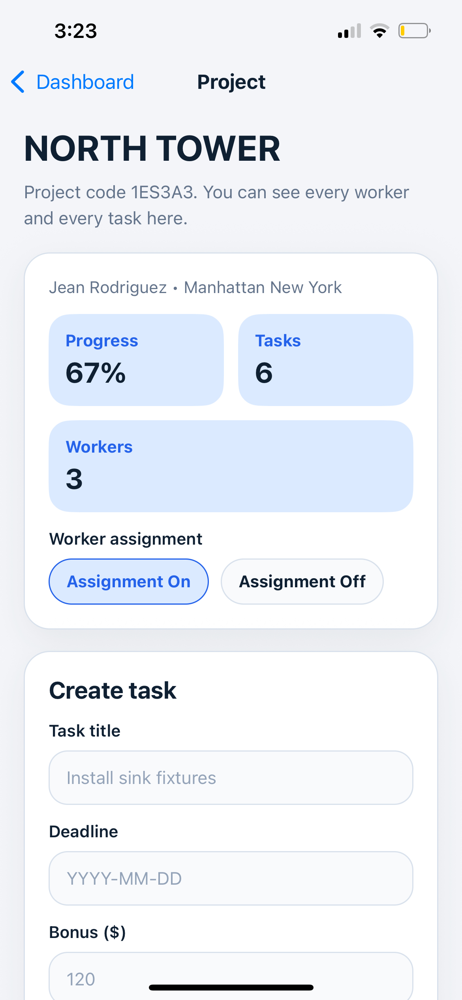
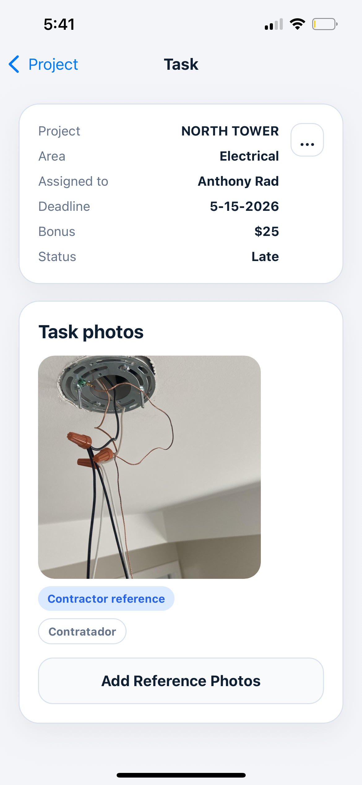
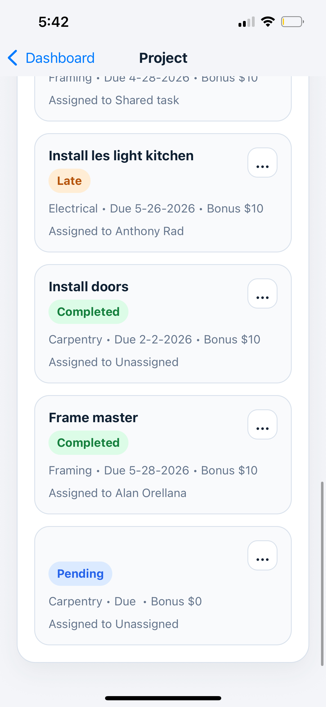

Photo-first construction visibility
See real progress on your construction projects
Stop guessing. Track work with real photo evidence.

Photo-first construction visibility
Stop guessing. Track work with real photo evidence.

The problem
When project managers rely on texts, calls, and end-of-day reports, the real status of the jobsite stays blurry until delays have already stacked up.
Schedules get built on assumptions instead of proof, which creates rework and avoidable back-and-forth.
Field teams may say a task is done, but without photo evidence no one can verify quality or completion quickly.
One missed update can stall the next crew, push inspections, and snowball into a costly schedule slip.
The solution
Workers upload photos from the field, tasks stay organized by area, and contractors can see true progress at a glance instead of chasing status updates.
Photo proof


Organized workflow
Project view

How it works
Start a job, define the build, and set up the spaces you want to monitor.
Break work into tasks by area so the whole team knows what needs proof.
Field crews attach image evidence directly to completed work from the app.
See what is complete, what is pending, and where the next blockers are forming.
Features
BuildTrack is designed for fast updates in the field and clear decisions in the office.
Every milestone can be backed by real images from the field.
Organize jobsite work into tasks so updates stay structured and easy to scan.
Separate work by carpentry, plumbing, electrical, finish work, and more.
Assign tasks when needed while keeping the workflow lightweight.
Know when photos land so project decisions happen with current information.
Daily command view
Trade progress
Latest uploads
App preview
The interface keeps photos, task status, and area-level progress in one calm view.

Review work with timestamped photos instead of chasing messages.

Crews can upload updates in seconds while they are still on-site.

Compare progress across areas and spot blockers before they spread.
Ready to start
Give your team a faster way to prove progress, protect schedules, and keep every project moving.